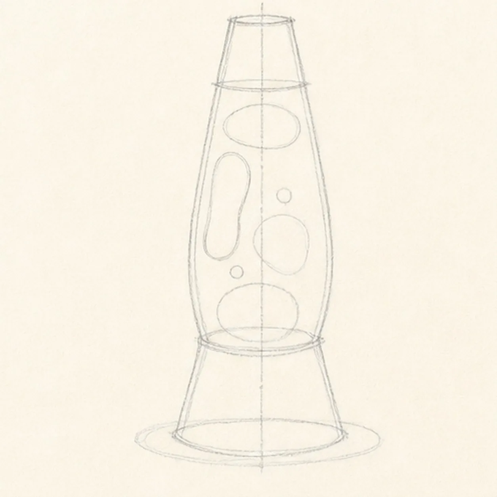
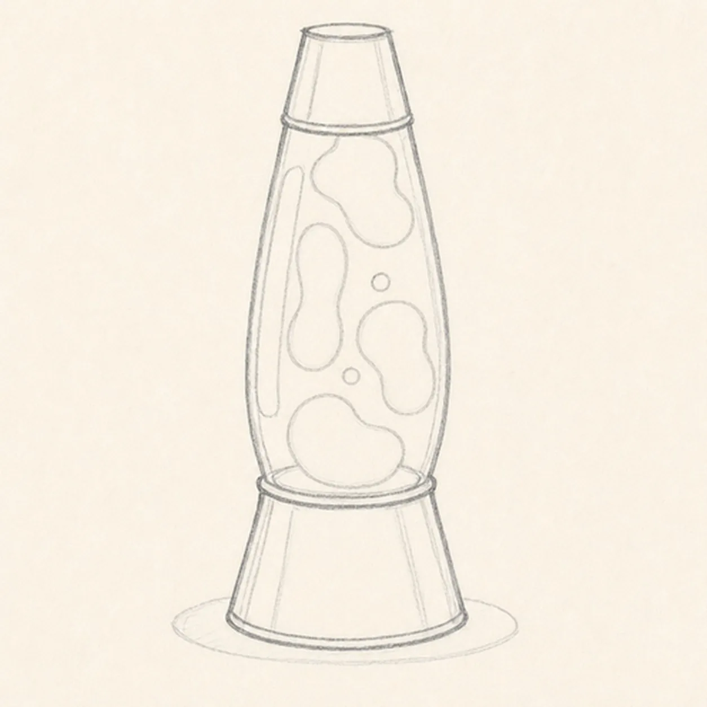
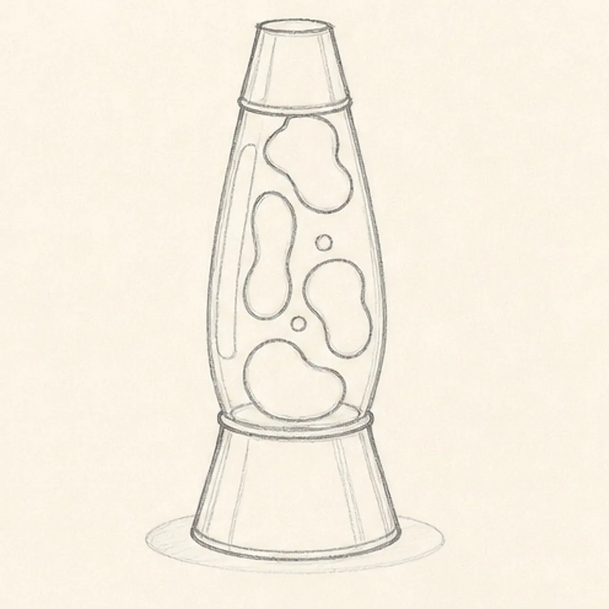
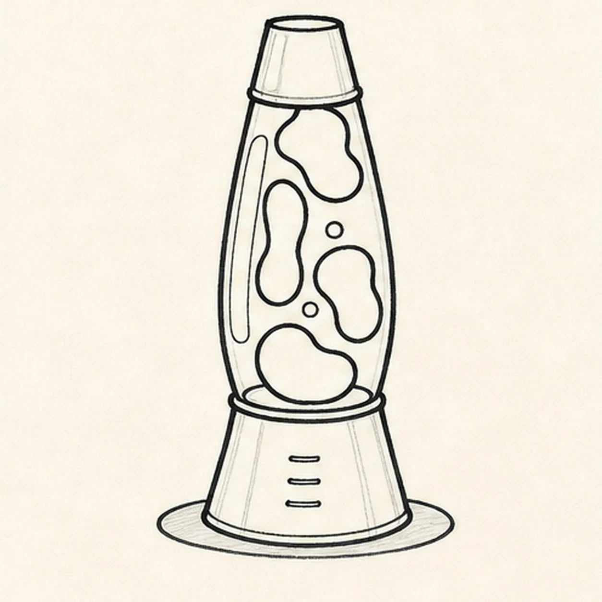
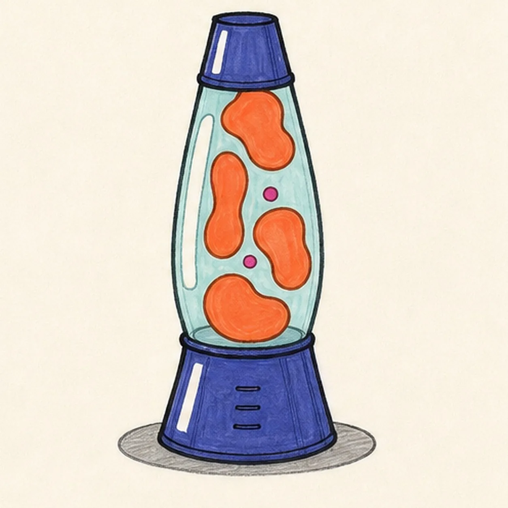

Felt-tip marker mode
Let's draw a retro lava lamp
Treat this as one playful practice round: sketch the idea loosely, simplify the shapes, then commit with confident marker outlines and bright fills.
-
01

Stack the lamp shapes
Draw a pale center axis, flared base trapezoid, curved glass chamber, and tapered cap, then place the exact four large wax footprints and two small bubble positions you will keep through the finish, plus one long glass highlight, two short metal highlights, and one shallow shadow.
Marker tip: Ghost the chamber sides from the cap to the base before touching down. Mark all six wax positions lightly and leave a clear paper channel around every shape.
-
02

Shape the retro silhouette
Wrap the guides with the complete flared base, curved glass chamber, tapered cap, and the top and bottom glass rims while keeping all four wax footprints and both bubble guides visible.
Marker tip: Rotate the page for the long chamber curves and compare both sides against the center axis. Keep the base wider than the cap and do not erase or redraw the lava layout.
-
03

Float the lava shapes
Darken and refine the four established wax footprints and two bubble guides inside the chamber while preserving the long glass highlight and two short metal highlights.
Marker tip: Turn the pale guides into confident kidney, peanut, and rounded contours without moving them. Count four large forms and two small circles before reaching for black marker.
-
04

Ink the lamp and lava
Thicken every established outside edge, rim, wax shape, highlight boundary, and shadow edge, then add three short seam accents to the base with imperfect black felt-tip lines.
Marker tip: Pull the marker toward yourself along each long curve and let the line weight vary slightly. Pause at every rim so the metal and glass boundaries stay crisp instead of becoming one heavy band.
-
05

Pour in the retro color
Fill the established cap and base indigo, four large wax blobs coral orange, two small bubbles magenta, glass pale aqua, and shadow warm gray while preserving the three white highlight gaps.
Marker tip: Color around the wax instead of across it, following the chamber curve with visible strokes. Let the pale aqua dry before reinforcing the black blob edges so the colors do not muddy.
-
06
Glow up the lava lamp
Strengthen selected keeper outlines and clarify the established lamp, four large blobs, two bubbles, rims, three seam accents, marker fills, paper highlights, and shallow shadow.
Marker tip: Count four large wax blobs, two small bubbles, and three highlight gaps, then stop. A face, logo, cord, switch, table scene, sticker edge, or badge frame would turn this focused lamp study into a different lesson.